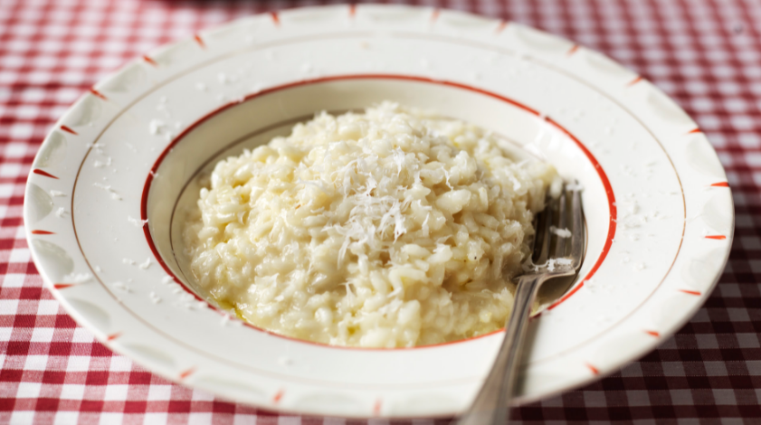

Risotto Bianco

Description
An italian classic, Risotto is easy to make and very tasty. This is the
basic recipe, Risotto bianco, but you can get as creative as you want!
Ingredients
For 1 person
- 100 grams of risotto rice
- Half an onion
- A finger length of celery
- 45 grams of butter
- Half a tbsp of olive oil
- 2 tbsps of parmesan cheese
- 400ml of chicken stock (or other types of stock)
- 1/4 of a glass of white wine
Steps
- Finely chop the onion and celery.
- Add 25 grams of butter and half a tablespoon of olive oil to pan
at medium heat. Add the onion and celery and let it sweat.
- Add the rice to the pan after a while.
- Once the rice has some oclor, add the white wine and 200ml of
stock, gradually.
- Stir constantly for 10 minutes.
- Add 200ml of stock slowly, and keep stiring for 10 more minutes.
- Add two tablespoons of grated parmesan cheese and 20 grams of butter,
stir it and cover it up. Let it sit for 3 minutes.
- To present it, add some more parmesan cheese and drizzle
a bit of olive oil, and that's it! Enjoy!
Go back